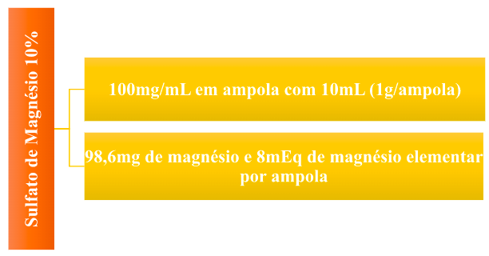
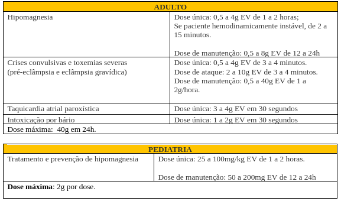

Magnésio – Sulfato de magnésio
Sumário:
Apresentação da droga
Sulfato de magnésio
Indicação

- Hipomagnesia (menos de 1,5mEq/L)
- Crises convulsivas e toxemias severas (pré-eclâmpsia e eclâmpsia gravídica)
- Taquicardia atrial paroxística
- Intoxicação por bário
Ajuste de dose
- Em pacientes renais orienta-se a diminuir a dose em 50%, usar com cautela e acompanhar atentamente a resposta clínica e o nível sérico.
- Em pacientes com dano severo da função renal, não exceder 20g em 48 horas.
Via de Administração

Preparo / Diluição

Administração

Estabilidade / Conservação
Duração de 48h em temperatura ambiente.
Toxicologia

Contraindicação
- Pacientes com bloqueio e/ou dano cardíaco
- Pacientes com bloqueio e/ou dano cardíaco
- Estados de hipermagnesemia
- Administração EV em casos de eclâmpsia/pré-eclâmpsia até 2 horas antes do parto

Uso durante a gestação

Categoria D: Há evidência de risco ao feto, porém o uso do medicamento em situações graves pode ser considerado.
Hipomagnesemia
Definição
Quando sua concentração se encontra abaixo da normalidade (entre 1,5 a 2,5 mEq/L) recebe a denominação de hipomagnesemia.
Causas
Perda excessiva
Alcoolismo
Diabetes
Terapia diurética
Ingestão reduzida
Sinais e Sintomas
Tratamento
Hipermagnesemia
Definição
Recebe a denominação de hipomagnesemia o aumento de magnésio no sangue, geralmente valores acima de 2,5 mEq/L.
Causas
Esse distúrbio é raro devido à grande capacidade de excreção renal, quando ocorre, a principal causa é a insuficiência renal.
Sinais e Sintomas
Tratamento
- Administração de cálcio e furosemida, este se a função renal estiver adequada.
- A hemodiálise pode ser bastante útil na hipermagnesemia grave.
- Considerar a administração de cálcio para pacientes com sintomas neuromusculares ou cardiovasculares:
DISTÚRBIOS ELETROLÍTICOS - MAGNÉSIO (hipomagnesemia e hipermagnesemia): https://www.youtube.com/watch?v=0XKIhQGvc7w